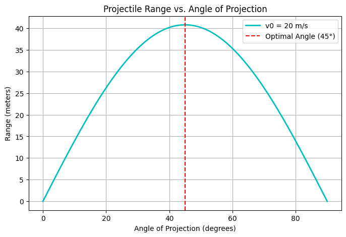
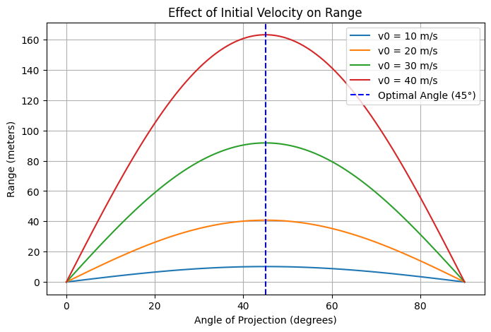
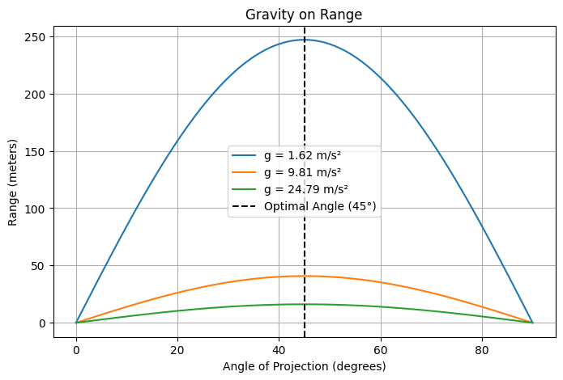
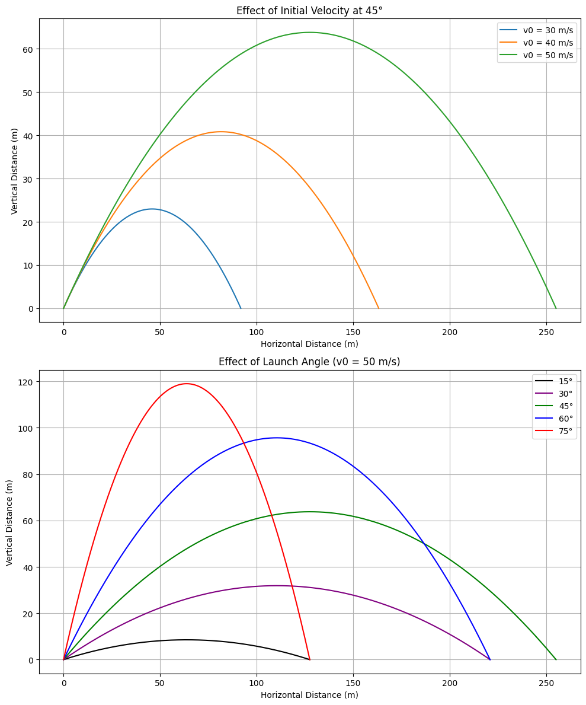

Problem 1
Theoretical Foundation of Projectile Motion
Step 1: Deriving the Governing Equations
Projectile motion is based on Newton’s Second Law:
In the case of a projectile undergoing freefall and assuming no air resistance, the only acting force is gravity, directed downward:
This leads to the following equations of motion:
Dividing both sides by \(m\) and integrating twice:
1. Horizontal Motion
- \(\frac{d^2x}{dt^2} = 0\) ⟶ First integration ⟶ \(\frac{dx}{dt} = v_{0x}\) (a constant)
- Second integration ⟶ \(x = v_{0x} t + x_0\)
Since \(v_{0x} = v_0 \cos\theta\), we get:
2. Vertical Motion
- \(\frac{d^2y}{dt^2} = -g\) ⟶ First integration ⟶ \(\frac{dy}{dt} = -gt + v_{0y}\)
- Second integration ⟶ \(y = -\frac{1}{2}gt^2 + v_{0y} t + y_0\)
Using \(v_{0y} = v_0 \sin\theta\), we obtain:
Step 2: Variety of Solutions Based on Initial Conditions
Projectile motion is influenced by key initial parameters: - Initial speed (\(v_0\)): Affects the overall distance and maximum height. - Launch angle (\(\theta\)): Determines range, with a peak at \(\theta = 45^\circ\) due to \(\sin 2\theta\) dependence. - Initial height (\(y_0\)): Impacts the total flight time and final distance traveled.
Adjusting these conditions leads to various trajectories — a reflection of how simple physics laws produce diverse outcomes.
Real-World Uses of Projectile Motion
1. Uneven Terrain
When launch and landing heights differ, the vertical position is:
To determine range, solve for \(t\) when \(y = 0\), which typically involves solving a quadratic equation.
2. Air Drag
Air resistance causes deviations from ideal parabolic motion. The drag force is defined as:
This leads to complex, non-linear differential equations that are often handled with numerical techniques.
3. Wind and Variable Conditions
Factors like wind or non-uniform gravity influence the launch parameters. For instance, wind modifies both horizontal and vertical components of motion.
4. Application Examples
- Sports: Air drag alters how balls move in soccer or basketball.
- Military: Projectile and missile paths are calculated considering resistance and gravity.
- Aerospace: Spaceflight must take varying gravity and drag into account.
- Engineering: Trajectories in controlled demolitions require detailed predictions.
5. Computational Approaches
In scenarios with drag or non-constant gravity, numerical methods such as Euler’s or Runge-Kutta techniques approximate the motion effectively.
Analysis of the Range
Horizontal Range and Angle of Projection
The horizontal range \(R\) is the total distance a projectile travels horizontally before returning to the original height (\(y = y_0\)).
Assuming \(y_0 = 0\), the total flight time \(T\) is:
Thus, the range is:
Simplified:
The outcome depends heavily on the launch angle:
- Maximum range occurs when \(\sin(2\theta) = 1\), i.e., at \(\theta = 45^\circ\).
- The function \(\sin(2\theta)\) is symmetric around 45°, so:
- \(R(30^\circ) = R(60^\circ)\)
- \(R(10^\circ) = R(80^\circ)\)
Role of Other Parameters
1. Initial Speed \(v_0\)
From the range formula:
- The range increases quadratically with \(v_0\).
- Doubling \(v_0\) multiplies the range by four.
- More speed results in longer airtime and faster movement.
2. Gravitational Acceleration \(g\)
- Range is inversely related to \(g\).
- On the Moon (with lower \(g\)), projectiles travel significantly farther.
- Example:
- Earth: \(g \approx 9.8\, \text{m/s}^2\)
- Moon: \(g \approx 1.6\, \text{m/s}^2 \Rightarrow R_{\text{moon}} \approx 6.1 \times R_{\text{earth}}\)
Summary
- Range is influenced by launch angle via the \(\sin(2\theta)\) term.
- It peaks at 45° and is symmetric around that angle.
- Greater initial velocity boosts the range significantly.
- Weaker gravity enables longer travel distances.
Understanding these principles enables optimization of projectile paths — useful in fields ranging from athletics to orbital mechanics.
Plot showing how the range varies with the angle of projection.

Analysis of the Graphs

Graph (a)
- This graph shows trajectories for different initial speeds (30 m/s, 40 m/s, 50 m/s) at an angle of 45°.
- Observations:
- Greater speed yields higher peak height and longer range.
Graph (b)
- This graph presents motion for various launch angles (15°, 30°, 45°, 60°, 75°) at a fixed speed of 50 m/s.
- Key points:
- 45° yields the greatest range.
- Other angles lead to shorter horizontal travel despite the same speed.
Why 45° Results in Maximum Range
Range is determined by:
Key Takeaways:
- Sine Function Impact:
-
Since \(\sin(2\theta)\) maxes out at 1 (when \(2\theta = 90^\circ\)), the optimal angle is \(\theta = 45^\circ\).
-
Symmetry:
- \(\sin(2\theta)\) has symmetry about 45°, so:
- \(R(30^\circ) = R(60^\circ)\)
- \(R(15^\circ) = R(75^\circ)\)
Practical Use:
The 45° launch angle is ideal for maximizing horizontal distance — explaining its strategic use in sports (e.g., javelin throwing) and military ballistics.
Effect of Initial Velocity on Range: Increasing velocity significantly boosts the range due to the square dependence

Effect of Gravity on Range: Lower gravity environments enable longer distances, while stronger gravity shortens them
